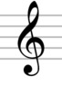
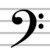
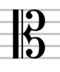
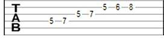

As Notas Musicais são sete:
Como um alfabeto musical, permitem agregar as frequências dos sons, viabilizando a composição musical ou, em outras palavras, uma combinação que gera melodia.
Essa classificação, a que se dá o nome de “notação musical”, foi inventada pelo monge e regente italiano Guido D'Arezzo (992-1050). A notação foi inspirada no “Hino a São João Batista”, cuja inicial de cada verso corresponde a uma nota musical.
Em inglês e em alemão, em vez dos monossílabos, são usadas as 7 primeiras letras do alfabeto, as quais apresentam a seguinte correspondência:
A = LÁ, B = SI, C = DÓ, D = RÉ, E = MI, F = FÁ, G = SOL ou H = SOL, em alemão.
Além das notas, existem ainda símbolos musicais muito importantes. Chamados de claves, existem três tipos:
Clave de Sol
Clave de Fá
Clave de Dó
A altura do som permite classificar a frequência das ondas sonoras. Desta maneira, os sons graves são considerados de baixa frequência, enquanto os sons agudos são os de alta frequência.
A intensidade do som está intimamente relacionada ao volume das ondas sonoras. Em outras palavras, a intensidade do som é uma característica sonora relativa ao nível da pressão e da energia presente nas vibrações das ondas sonoras.
A duração da música está pautada na quantidade de tempo em que ocorre um fenômeno musical. Assim, a duração é um intervalo de tempo de uma nota musical ou o tempo entre duas notas (pausa).
O Timbre é uma característica musical que nos permite classificar a fonte de uma nota musical. Basta ouvir a mesma nota musical em instrumentos diferentes, como o violino e o piano, e o resultado será a percepção de timbres diferentes.
A escala musical é a frequência ordenada do som, isto é, o conjunto das sete notas musicais, com a repetição da primeira. (Do-Re-Mi-Fá-Sol-Lá-Si-Do). Além disso, a escala musical pode ser ascendente e descendente dependendo da frequência vibratória dos sons.
As notas musicais são representadas na partitura, que é um conjunto de cinco linhas (pautas ou pentagramas).

As notas também podem ser representadas em cifra:
![Tem o fundo branco, na parte superior tem as seguintes letras e preto: Em (mi), G (sol), D (ré), C (dó), abaixo dessas letras possui linhas ao contário formando quadradinhos, e em cima de algumas linhas podem ter os números: 1, 2, 3 ou 4 envoltos cada por um círculo preto, que significam os dedos que deve posicionar no instrumento de cordas, formando os acordes, e abaixo disso temos mais 2 letras: Am (lá menor) e C/D (dó com baixo em ré), e abaixo delas estão os mesmos quadradinhos que citei anteriormente.](Imagens/cifra.jpg "Cifra")
Ou como tablaturas:
Após a invenção das notas musicais como conhecemos, no século XI, foi criada uma forma de medição da duração das mesmas, a qual recebeu o nome de mensuralismo. A partir dessa técnica, criada no século XII, foi possível representar a música graficamente.